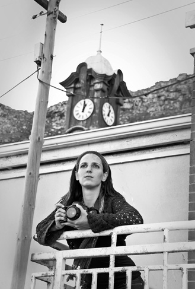
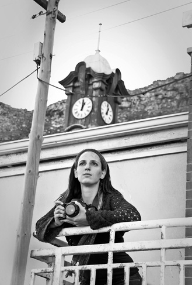

Katie Rentzke is a curator, teacher, traveler and philanthropist. Above all else, she is a storyteller. Holding a BFA from Bowling Green State University and a MA in Photography from Ohio University's School of Visual Communications, she has passionately explored the through the eyes of a lens stories of those across the US, Southern Africa and Europe.
Ms. Rentzke lived in Cape Town, South Africa for five years. While there, she worked as a documentary photographer, as the senior lecturer at Cape Town School of Photography, and founder of an international non-profit project called Urban Voice Youth Photographic Project.
More recently she was the Interim Arts Director for the City of Covington, KY. There she managed and curated the AEC Gallery, as well as acted as a promoter and advocator of the Arts for the Covington community.
Today, Ms. Rentzke lives in San Francisco, CA. and she is available for photographic and curatorial assignments worldwide and local private photography lessons.